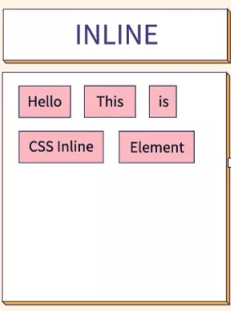

Block Element:

They consume the entire width available irrespective of their sufficiency. They always start in a new line and have top and bottom margins. It does not contain any other elements next to it.
-
Examples of Block elements:
- h1--h6: This element is used for including headings of different sizes ranging from 1 to 6.
- div: This is a container tag and is used to make separate divisions of content on the web page.
- hr : This is an empty tag and is used for separating content by horizontal lines
- li: This tag is used for including list items of an ordered or unordered list.
- ul: This tag is used to make an unordered list.
- ol : This tag is used to make an ordered list.
- p: This tag is used to include paragraphs of content in the webpage.
- table: This tag is used for including the tables in the webpage when there is a need for tabular data.
Inline Element:
Inline elements occupy only enough width that is sufficient to it and allows other elements next to it which are inline. Inline elements don’t start from a new line and don’t have top and bottom margins as block elements have.
-
Examples of Inline elements:
- a: This tag is used for including hyperlinks in the webpage.
- br: This tag is used for mentioning line breaks in the webpage wherever needed.
- script : This tag is used for including external and internal JavaScript codes.
- input: This tag is used for taking input from the users and is mainly used in forms.
- img: This tag is used for including different images in the webpage to add beauty to the webpage.
- span: This is an inline container that takes necessary space only.
- b: This tag is used in places where bold text is needed.
- label: The tag in HTML is used to provide a usability improvement for mouse users i.e, if a user clicks on the text within the